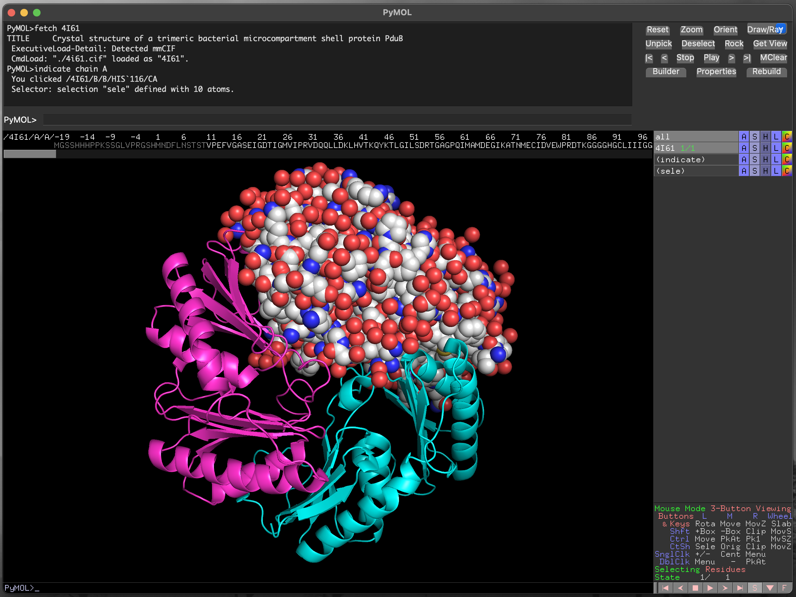

4 PyMOL
PyMOL is a widely-used, open source molecular visualisation package, with paid-for (“incentive”) support and updates.
4.1 Where can I download PyMOL?
The official home of PyMOL is at Schrodinger Software, where you can download the “Incentive” version. This requires a licence, which is free for educational use, but not free for academic/commercial/research use.
There is an open-source, freely-licensed version of PyMOL, also provided by Schrodinger Software. This can be downloaded from GitHub and self-compiled, or obtained through homebrew:
4.2 Using PyMOL
Start the program from the application icon, or from the command-line (depending on which version you have installed), to obtain the landing screen (Figure 4.1).
PyMOL landing screen, for the Open Source version, on macOS.4.2.1 PyMOL layout
Pymol is laid out approximately into four quadrants. Clockwise from top left in Figure 4.1 we have:
- The interactive command window. At the bottom of this window is the command prompt
PyMOL >, where commands to control the visualisation can be typed and executed. - The next quadrant (top right) contains a set of function buttons providing a range of actions for control of the visualisation.
- Below this is the object control panel, which is the main point-and-click interface for changing the way that molecules in the visualisation window appear, and below this is the mouse control legend to explain what your mouse/trackpad actions will achieve.
- Finally, at bottom left, we have the main viewer window, where your molecule will be shown.
4.3 Obtaining structures
PyMOL can connect directly to RCSB/PDB to download structural data, and can load structure files from your local storage.
4.3.0.1 fetching structures from RCSB/PDB
We will download a structure directly from RCSB/PDB. To do this we will use the interactive command window. We also need to know the RCSB/PDB accession for the structure we want to view. Here, we will use the structure 4I61, a trimer of PduB, a bacterial microcompartment protein.
To fetch this structure from RCSB/PDB, we enter the command fetch 4I61 into the command prompt, and hit Return (Figure 4.2).
PyMOL command prompt including fetch command.Executing this command will produce a short report to the interactive command window, and show a rendering of the structure in the main viewer window (Figure 4.3).
4I61 PduB structure in PyMOL.PyMOL downloads the fetched file.
When executed, this command will also download the file 4I61.cif to the current working directory. You can load this file into PyMOL without requiring a live network connection.
4.4 Changing the appearance of the structure
4.4.1 Rotating the molecule
By default, left-clicking on the molecule in the main viewer window and moving your mouse will rotate the molecule. You can use this to obtain a viewing position that helps you understand the structure better or that, when saved as a figure, will communicate your message to a reader.
4.4.2 Changing molecule colours
The object control panel provides buttons (A, S, H, L, C) that control aspects of the molecule’s appearance:
A/ActionS/ShowH/HideL/LabelC/Colour
There are three distinct protein chains in this trimeric structure. We will colour the protein differently by chain so that we can see them more clearly.
- Click on the
Cbutton for4I61in the object control panel - Click on
by chainin the menu that appears - Click on
by chainin the new menu
This colours each chain in the structure differently, and also the water molecules (small dots) associated with each chain (Figure 4.4).
PyMOL rendering of 4I61 with a different colour for each chain.4.4.3 Hiding elements of the structure
We sometimes want to focus attention on particular parts of a structure. To aid in this we can hide parts of the visualisation, using the H/Hide menu in the object control panel.
For example, to hide the water molecules that surround each chain, we would:
- Click on the
Hbutton for4I61in the object control panel - Click on
waters
This removes the water molecules from our visualisation (Figure 4.5).
4I61 structure with waters removed.4.4.4 Selecting part of the structure
It is possible to select parts of the structure in PyMOL by pointing and clicking using the mouse. For complicated selections especially, this can be difficult, tedious, and error-prone. It is usually better to use the interactive command window to select structural components explicitly.
4.4.4.1 Selecting with indicate
Wo select only the first chain of the trimeric PduB structure (chain A), we could execute the command indicate chain A, which highlights that chain in the main visualisation window, to show that it is selected (Figure 4.6).
See that using indicate has produced a new row in the object control panel called (indicate). This allows us to control the appearance of the selected element.
4I61 structure with chain A highlighted.With the chain selected, we can then change the way it is drawn using the S/Show menu for the (indicate) selection, and the colours used for rendering, using the corresponding C/Colour menu (Figure 4.7, Figure 4.8).
4I61 chain A structure as spheres.Click on the (indicate) label in the object control panel to cancel the selection.
4I61 chain A structure with atom colouring.4.4.4.2 Selecting specific residues with the sequence viewer
Below the mouse action legend on the right hand side of the window there is a set of control buttons. To the right of this list is a button labelled with the letter S. Clicking this button brings up the sequence viewer/selector at the top of the main image visualisation window (Figure 4.9).

The scroll bar below the sequence allows you to find any part of the protein sequence (and additional molecules in the structure). The symbols are coloured to match the current structural representation, to aid with locating specific residues. For instance, in ?fig-selecting_residues the residues for chain B are coloured in cyan. Residues can be selected by clicking and dragging within the displayed sequence, and the current selection is highlighted as (sele) in the object control panel. We can also select discontinuous sections of the structure, as in Figure 4.11.
PyMOL using the sequence viewer/selectorPyMOL using the sequence viewer/selector